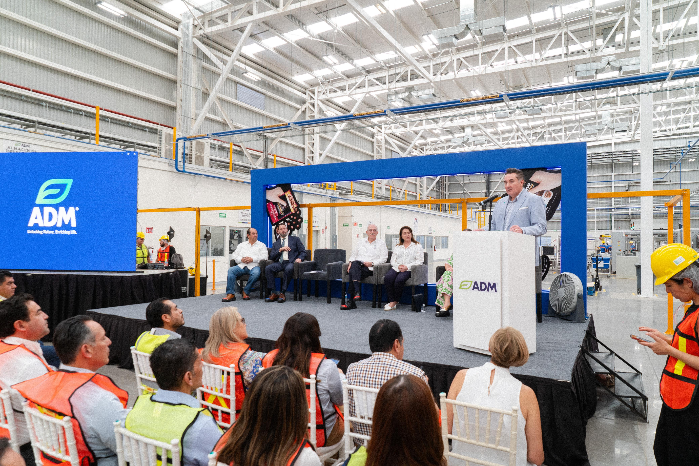
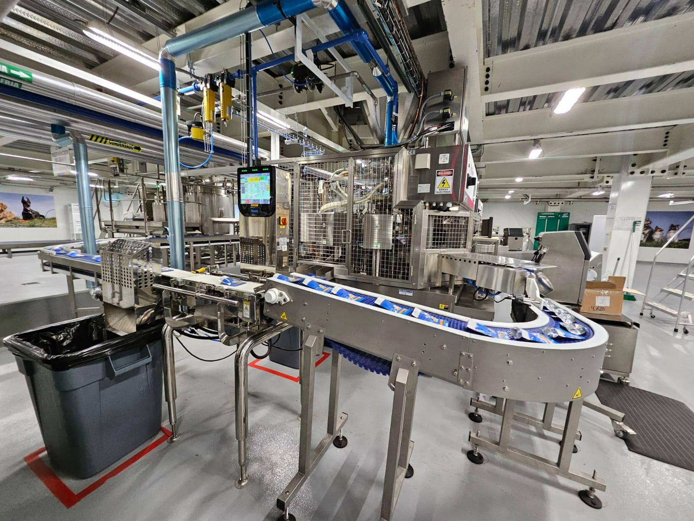
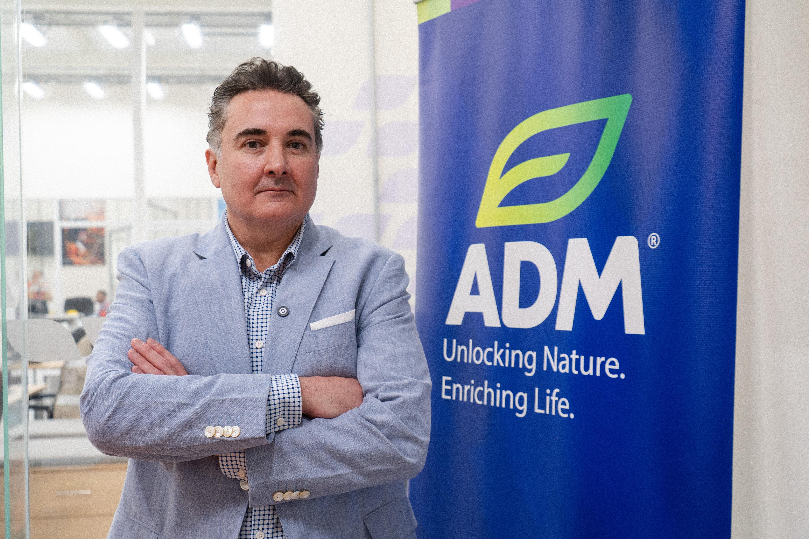

En los últimos años, la industria de alimentos para mascotas en México ha experimentado un crecimiento sin precedentes, y la reciente inauguración de la nueva planta de alimentos húmedos de Ganador y Minino en Yecapixtla, Morelos, es prueba de este auge. Con una inversión de 39 millones de dólares, esta moderna instalación de ADM® en México dedicada exclusivamente a la producción de alimentos húmedos para perros y gatos, reafirmando el compromiso de la marca con la calidad, la innovación y el bienestar animal. 
Lo que distingue a esta nueva planta es su avanzada tecnología, que la convierte en una de las más modernas dentro de la red de ADM® en México. Equipadas con tres líneas de producción, estas instalaciones no solo optimizan los procesos de manufactura, sino que también garantizan que cada producto cumpla con los más altos estándares de calidad. Pero hay algo aún más importante: la planta también representa un gran avance hacia la sostenibilidad. Con un enfoque claro en la eficiencia energética, la utilización responsable del agua y procesos automatizados que facilitan un ambiente de trabajo ergonómico, esta planta se convierte en un ejemplo de cómo la innovación tecnológica y el respeto por el medio ambiente pueden ir de la mano.
“Minino y Ganador son las marcas que más se venden en México menciono: KARIM CASTRO”>
La ceremonia de inauguración de esta planta fue presidida por Karim Castro, presidente de Nutrición Animal y de Mascotas para el Norte de Latinoamérica y el secretario de Agricultura y Desarrollo Rural, Julio Berdegué Sacristán.
“Se estima que hay más de 80 millones de animales de compañía, con perros y gatos como los más populares menciono : comentó: Karim Castro”
Desde su llegada a México en 2008, la compañía ha logrado convertirse en uno de los referentes
principales en la industria de la nutrición para mascotas, gracias a sus queridas marcas
Ganador®, Minino®, Top Choice® y FullTrust®.
Este éxito no es casualidad; ha sido el resultado de inversiones estratégicas que han permitido
su crecimiento continuo. Además de la apertura de esta nueva planta, en 2023 ADM® también
inauguró una nueva línea de producción en Guadalajara, junto con un Macro Centro de Distribución
en el Estado de México, ampliando aún más su capacidad para atender a las necesidades de las
mascotas en todo el país.
Karim Castro mencionó que dejamos de importar de Francia el alimento humano para hacerlo en México precisamente en Morelos. Ya que ADM® ADM (Archer Daniels Midland Company) comenzó sus operaciones en 1902 en Estados Unidos. Fue fundada en Decatur, Illinois, y originalmente se enfocaba en el procesamiento de granos y la producción de aceites vegetales. Con el tiempo, ADM se expandió y diversificó, convirtiéndose en una de las mayores empresas globales en la industria de alimentos y productos agrícolas, incluyendo la nutrición animal, alimentos para mascotas y más.
“Esta expansión nos permitirá atender las necesidades de nuestros socios estratégicos y consolidar nuestra posición dentro del TOP 2 de fabricantes de alimento para mascotas en el país comentó: Karim Castro”>
ADM® en números : ADM®
170 países está presente
2do fabricante de alimento para mascotas
2008 inició operaciones en México
390 toneladas de alimento donadas a lo largo de sus operaciones
39 millones invertidos en la nueva planta de alimento húmedo en ADM YECAPIXTLA
150 empleados en la planta ADM YECAPIXTLA